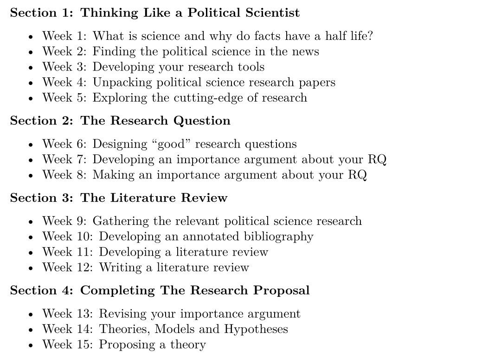

Designing a Research Proposal
Justin Leinaweaver (Spring 2026)

Proposal Paper 1: Important Research Question
Assignment Prompt
What is the research question motivating your proposal and why is it important?
Importance Criteria: Impact on the real world
Proposal Paper 3: REVISED Important Research Question
Assignment Prompt
What is the research question motivating your proposal and why is it important?
Importance Criteria:
Impact on the real world, AND
Impact on the academic literature
How similar?
How different?
Revised Research Questions
What is your topic of interest?
What is the gap in the knowledge?
What is your revised RQ?
Proposal Paper 3: REVISED Important Research Question
Assignment Prompt
What is the research question motivating your proposal and why is it important?
The importance argument must show that the topic is impactful in the political world AND fills a gap in the academic literature